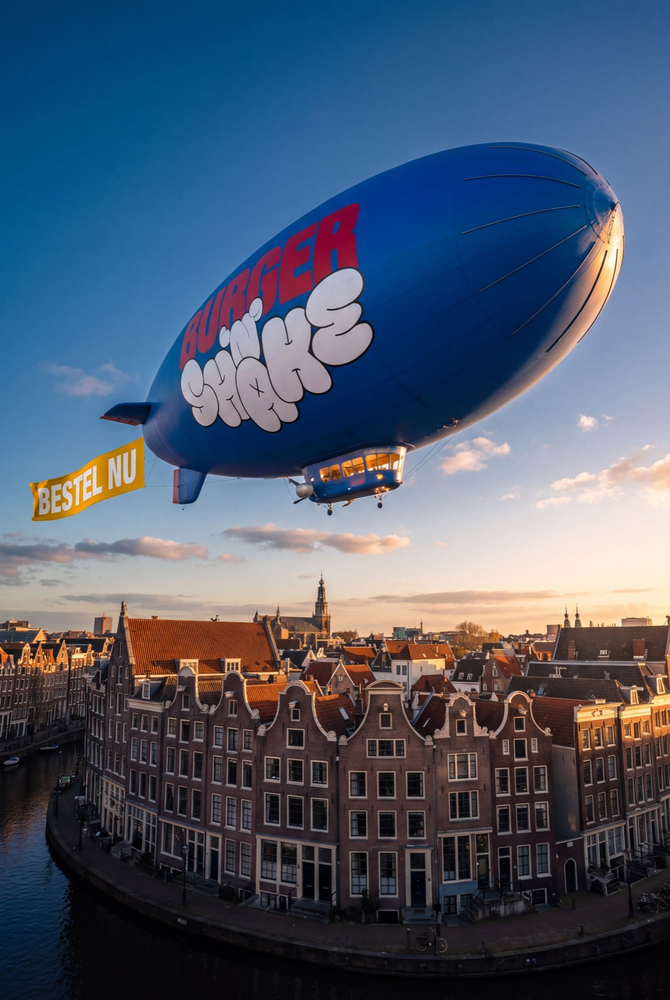
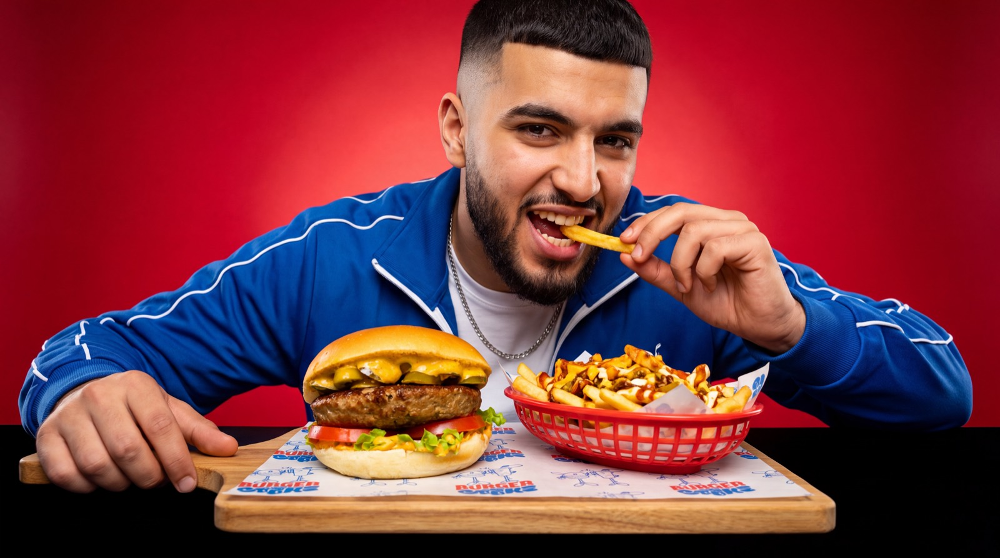
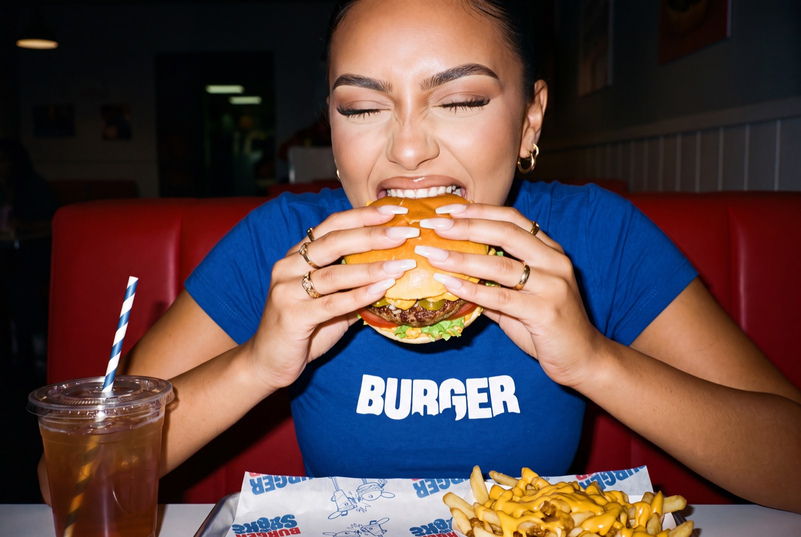
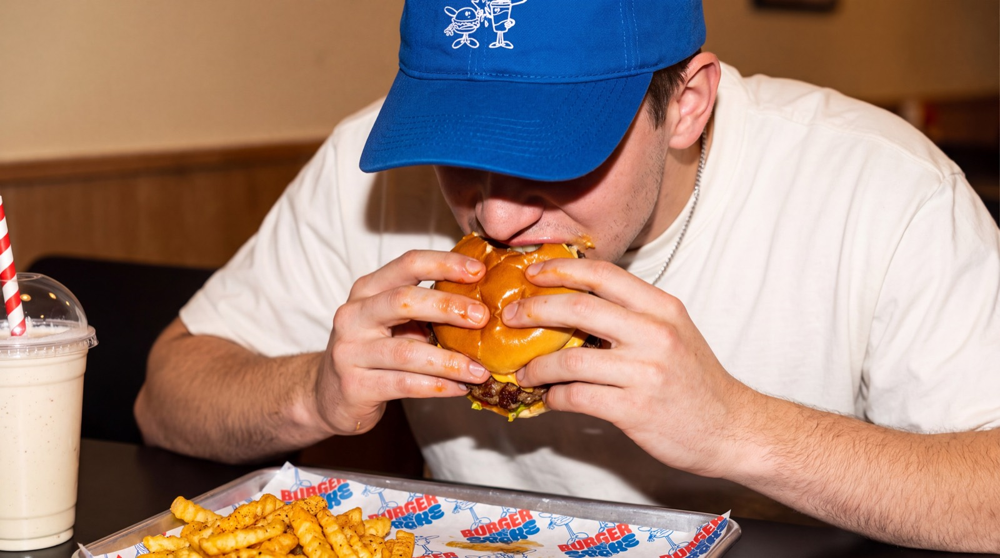

Een groeiend halal concept
De vraag naar goed halal fastfood groeit hard, en het aanbod met echte merkbeleving blijft achter. Precies in dat gat zit Burger 'n Shake.
Burger 'n Shake is een groeiend halal fastserviceconcept met verse burgers, fries en shakes, actief in meerdere Nederlandse steden. Wij zoeken ondernemers die lokaal een sterke vestiging willen bouwen, met een herkenbare formule, training en begeleiding vanuit HQ achter zich.
De Franchise Match duurt 3 tot 5 minuten en laat zien of er een serieuze match is. Of stel je vraag via WhatsApp






Burger 'n Shake maakt smashburgers, fries en shakes zoals ze horen: vers bereid, volledig halal en geserveerd in een merk dat jongeren herkennen en delen. Wat begon als één zaak groeit inmiddels stad voor stad, met een eigen huisstijl, een trouwe gastengroep en een formule die bewezen werkt op drukke stadslocaties. Nu zoeken we ondernemers die de volgende vestigingen willen openen.
Een eigen zaak beginnen is groot. Met Burger 'n Shake begin je niet vanaf nul, maar stap je in een formule waarin de belangrijkste keuzes al bewezen zijn.
Doe de Franchise MatchDe vraag naar goed halal fastfood groeit hard, en het aanbod met echte merkbeleving blijft achter. Precies in dat gat zit Burger 'n Shake.
De vestiging is van jou en jij bouwt hem op in jouw stad. Voor formule, inkoop en marketing sta je er niet alleen voor.
Vaste leveranciers en formule-afspraken zijn al geregeld, zodat jij je tijd kunt besteden aan je zaak en je team in plaats van aan uitzoekwerk.
Burgers, fries, hotdogs, shakes en smoothies zorgen voor meerdere bestelmomenten, van lunch tot late avond.
Van locatiebeoordeling en ondernemingsplan tot inrichting, training en openingscampagne: je doorloopt een vast traject richting je eerste open dag.
Burger 'n Shake heeft een herkenbare huisstijl en een publiek dat het merk al kent van socials en bestaande vestigingen. Jouw opening begint niet bij nul bekendheid.
Franchisen werkt alleen als het van twee kanten klopt. Daarom zijn we er eerlijk over voor wie deze formule wel en niet gemaakt is.
Twijfel je waar jij zit? Daar is de Franchise Match precies voor bedoeld.
Vanaf het eerste gesprek tot ver na je opening staat er een team achter je. Dit mag je verwachten.
Begeleiding bij het franchisetraject, locatiebeoordeling, input voor je ondernemingsplan, hulp bij de financieringsvoorbereiding en begeleiding bij de inrichting en verbouwing van je pand.
Training voor jou en je team, operationele ondersteuning op de vloer en een openingscampagne die jouw vestiging lokaal direct zichtbaar maakt.
Doorlopende operationele begeleiding, marketingondersteuning, centrale inkoop, formulebewaking en advies bij verdere groei.
Binnenkort lees je hier de verhalen van de ondernemers achter onze vestigingen: waarom ze voor Burger 'n Shake kozen en hoe de weg naar hun opening eruitzag.
Meer verhalen volgen zodra onze nieuwste vestigingen open zijn. Wil jij de volgende ondernemer zijn? Doe de Franchise Match
Het helpt, maar het is geen harde eis. Ervaring met leidinggeven, retail of hospitality telt ook mee, en je wordt volledig getraind voor de operatie.
Wij zoeken in de basis actieve ondernemers. Hoe jouw rol er precies uitziet, bespreken we tijdens het traject.
De investering hangt af van je locatie en pand. De financiële uitgangspunten bespreken we stap voor stap met geschikte kandidaten tijdens het traject.
In de Franchise Match vragen we naar je financiële uitgangspositie, zodat we samen kunnen bepalen wat haalbaar is.
Ja, dat kan. Geef het aan in de Franchise Match, dan nemen we het mee in het gesprek.
Heb je zelf een stad of zelfs een locatie op het oog? Juist dan horen we graag van je, laat het weten in de Franchise Match.
We bekijken je Franchise Match en nemen contact op voor een kennismaking wanneer er een mogelijke match is. Download je alleen de brochure, dan hoor je binnen enkele dagen van ons.
Dat verschilt per kandidaat en locatie. Reken op een serieus traject van meerdere maanden, van kennismaking tot opening.
Leuk dat je interesse hebt in een eigen Burger 'n Shake. Met deze Franchise Match kijken we of jouw ambitie, achtergrond, regio, beschikbaarheid en financiële uitgangspositie aansluiten bij wat er nodig is om een vestiging te openen. Invullen duurt 3 tot 5 minuten en verplicht je tot niets.
Liever eerst rustig lezen? Laat je gegevens achter en je ontvangt de brochure direct per mail. We nemen daarna eenmalig contact op om te horen of je vragen hebt.